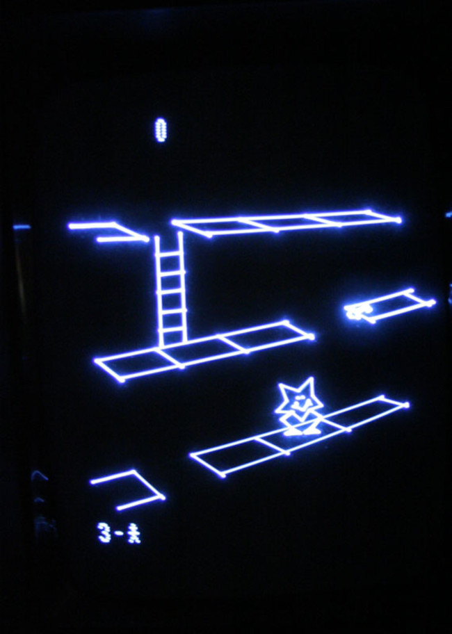

They don't make 'em like that any more: how the Vectrex almost revolutionized video gaming
 The Vectrex was a revolutionary video gaming console, which enjoyed a brief
frenzy of popularity from about 1980 until 1983. When I first played
one, I was staggered by the image quality provided by its built-in screen --
at least the equal of the full-sized cabinet games we played
in amusement arcades, and dramatically better than any competing
consumer gaming console.
The Vectrex was a revolutionary video gaming console, which enjoyed a brief
frenzy of popularity from about 1980 until 1983. When I first played
one, I was staggered by the image quality provided by its built-in screen --
at least the equal of the full-sized cabinet games we played
in amusement arcades, and dramatically better than any competing
consumer gaming console.
The Vectrex display wasn't just faster or more colourful than other gaming systems: it worked in completely new way. New in the entertainment industry, anyway: the Vectrex display was more like a laboratory oscilloscope than a television.
Uniquely among home video consoles, the Vectrex had a built-in screen. All previous consoles had to be connected to a video monitor or, more usually, a television set. Typically, the console included a UHF modulator, so it could be plugged into the television's aerial socket. We would then tune the television to the modulator's output frequency, in the same way we would tune to a TV station: typically by turning a knob on the front of the set. More advanced TV sets (advanced for 1980, that is) had programmable buttons for different channels, one of which could be set to the console's output frequency. Very advanced TV sets included a composite video input as well as an antenna socket. If present, this offered a better-quality picture than the antenna socket, but still crude by modern standards.
The Vectrex didn't have a built-in screen just for convenience: most households had a television set, but few had an oscilloscope. The Vectrex could never have been made to work with a conventional video monitor -- not in 1980, anyway.
A conventional television set used a raster-based display: the entire screen was redrawn 50-60 times per second by a scanning electron beam. Because the display was made up of a fixed number of lines (525 viewable lines in the UK), it was inherently pixellated, although we did not really think in terms of 'pixels' at that time. 525 vertical pixels is a respectable resolution on a screen of modest size but, in practice, electronic technology of the time was not able to provide that resolution. A conventional UK TV set offered a resolution of about 300x600 pixels.
This comparatively poor resolution meant that straight lines looked fuzzy, and text could not be smaller than about one tenth the screen height. Using a TV modulator rather than a composite video connection -- which few TV sets had -- made the situation even worse, as the modulation and demodulation process was inherently noisy.The Vectrex avoided all these problems by not using a raster scan at all. Instead, its display directed an electron beam along the exact lines to be drawn. It used a pair of digital-to-analogue converters to create voltages to deflect the beam in the horizontal and vertical axes, and thus build up any shape required, line by line. The 'resolution' of this display was the width of the electron beam on the screen surface, perhaps a half millimetre or so. But straight lines looked straight, not fuzzy -- there was just a bit of a glow around the drawn lines, which I thought looked rather appealing.

The display technology of the Vectrex lent itself well to line drawing. Because it did not have to maintain a complete raster, the Vectrex used far less computation to build the display than contemporaneous consoles. It had an 8-bit CPU running at 1.5 MHz, with only a few kB of RAM -- a similar specification to the Sinclair ZX80. Because maintaining the display was so simple, the Vectrex had more CPU resource left over for other things. Although it used the same sound generator as most consoles (and early desktop computers) -- the General Instruments AY-3-8910 -- some games were able to use synthesized speech as well as the usual beeps and bangs. This is all the more remarkable when we remember that the game cartridges never had more than 32kB of storage.
Moreover, rather than providing only a top-down or side-scrolling view, as was common in all other games consoles, the Vectrex could display a measure of perspective. We can just about see this in the screenshot of the Spike game above. Spike not only moves side-to-side, but also forwards and backwards, as rendered by the perspective view. Forty years on, it's not obvious how difficult it would have been to produce such a display on a console game.
The Vectrex could also produce a 3D effect -- using proprietary goggles -- at least ten years before this technology entered the consumer market.
My recollection is that about 20 games were available in the UK, including the built-in 'Minefield'. I owned most of these at some point. Not all were of the same quality as Spike, but all were somewhat engaging.
So what happened to the Vectrex? Its most obvious limitation was that it had only a monochrome display, at a time when most households had access to a colour TV. TV-based consoles made very limited use of colour in the early 80s, but it was clear that colour was going to be important. Some Vectrex games came with colour overlays that we could physically place in front of the display. These worked -- to some extent -- for games where specific screen regions were of fixed size: an area of sea and an area for sky, for example. But this crude use of colour added nothing to the gameplay.
More subtly, the Vectrex was only suitable for games that could be rendered using its proprietary line drawing technology. It's plausible that this limitation could lead eventually to the repertoire of possible games being completely exhausted but, in fact, the Vectrex died long before we reached that point.
What killed the Vectrex was the same thing that killed most games consoles in the early 80s: the rise of the desktop computer. A desktop computer could play games and do many other things. Some of the early consumer computers were marketed with a focus on gaming; a good example was Commodore's VIC-20, which had a cartridge slot for software, making it as easy to use as a games console; but it could also be used for math and word processing. Games consoles were -- and largely still are -- single-minded appliances.
Dedicated games consoles didn't really regain a market until the technology became so cheap that an ordinary household could contemplate owning both a desktop computer and a games console. The renewed interest in games consoles was helped by the diversification of computer hardware in the 80s. It became difficult for game developers to produce software that worked on general-purpose computers -- even when they mostly ran the same operating system. The MS-DOS computers of the 80s had different CPU speeds, memory, sound capabilities, and video resolutions. In the end it became easier for developers to target proprietary games consoles again, which made them more popular. But, by the time this happened, the Vectrex had already gone out of production.
And let's not forget that the Vectrex wasn't cheap: at about £200 in 1982, it was a comparable price to a serviceable second-hand car. My first car, in 1985, cost £86. To be sure, the Vectrex didn't need a separate display, which could have been a cost saving -- but most households already had a TV set. We were used to paying comparatively large sums for electronic devices back in those days: a decent colour TV would also have cost as much as a second-hand car. In fact, in the 70s my parents rented their TV set on a monthly basis, as many people did. Given how expensive the Vectrex was in 1980's money, it surprises me how many people actually did own one. Although the game cartridges were expensive, there was a large enough owner base to swap or borrow them. Somewhere, a woman called Alison probably still has a bag-full of Vectrex cartridges that she never returned when she dumped me.
The Vectrex is an example of a technology that ought to have done better than it did. Of course, market forces rule the gaming industry, as they do all aspects of consumer electronics, and market forces aren't always logical. In an alternative universe, we are all playing line-based video games on ten-foot screens at two thousand frames per second but, of course, that isn't how things worked out.
There remains a small, but robust, enthusiast interest in the Vectrex, as there is for CP/M and the Apple IIe. There are even people producing new games for it: a challenge of such monumental technological complexity that I suspect almost no contemporary programmer would be equal to it. My Vectrex is still in my mother's attic, awaiting capacitor surgery -- perhaps one day I'll get around to it. Maybe.